Visuals · round 3
Lesson 7, step 4, round 3 (2026-10-21). The six images from round 2, retouched locally, with no new generation. The 3:1 crop and focus point came first, so marks outside the visible band weren’t touched. Each mark inside the band was masked by hand, filled from the surrounding fabric, and given grain matched to its surroundings. Every patch was checked against its pixel values before and after, and the whole band was checked again at full size afterwards. Not on any card yet: they wait for the designer’s OK.
Landmarks: the Berlin and Boston landmarks stay in the files (designer, 2026-10-21). They look plausible, with no distorted architecture, and both sit above the card’s band.
Berlin Marathon · marathon-city-1
Card focus: photo--lower (74%). Band (1536 × 1024 file): y 379–891. Retouched spots inside the band: 16. The Brandenburg Gate and the TV tower stay in the file (plausible: six columns and the quadriga on the gate, the sphere and mast on the tower) but sit above the band, so the card doesn’t show them.
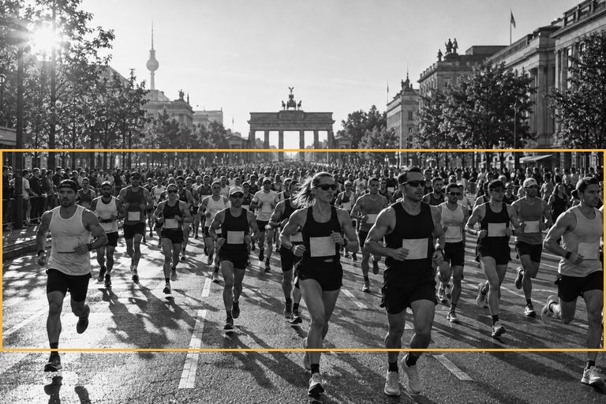
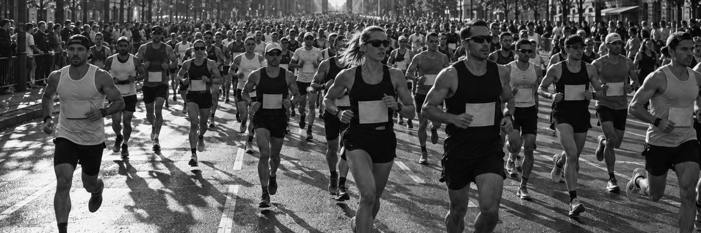
Retouched spots: before | after, 5×, 40 px window
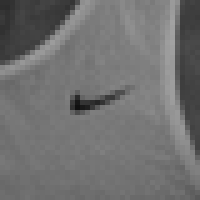
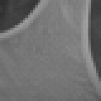
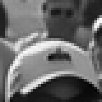
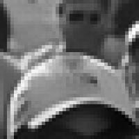
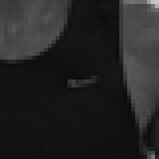
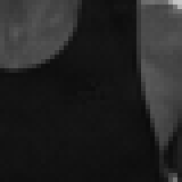
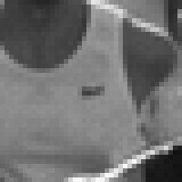
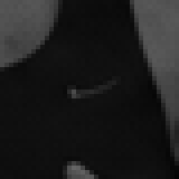
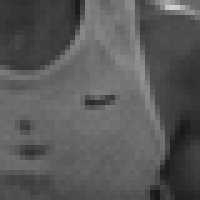
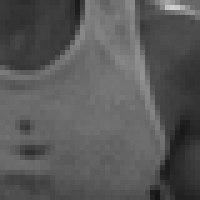
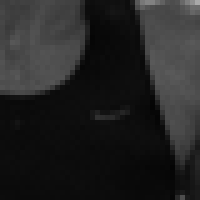
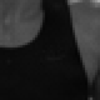
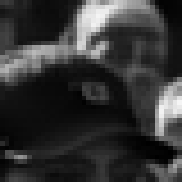
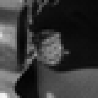
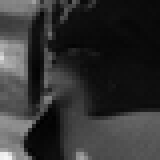
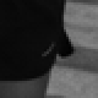
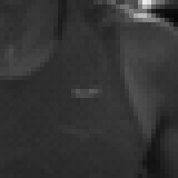
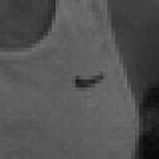
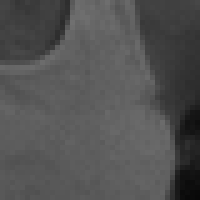
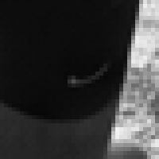
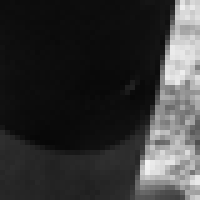
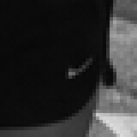
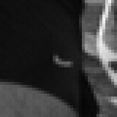
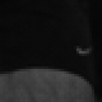
Boston Marathon · marathon-city-2
Card focus: photo--low (72%). Band (1536 × 1024 file): y 369–881. Retouched spots inside the band: 18. The skyline (a tall tower, a domed building) stays in the file, plausible, above the band.
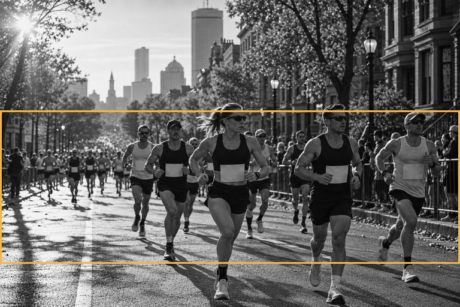
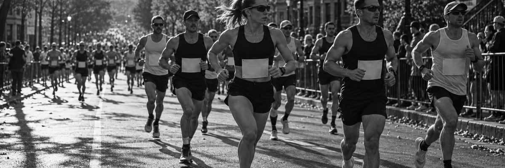
Retouched spots: before | after, 5×, 40 px window
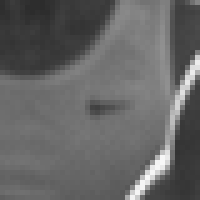
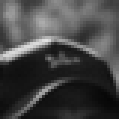
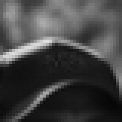
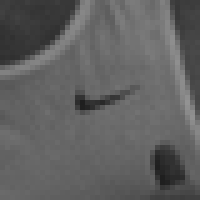
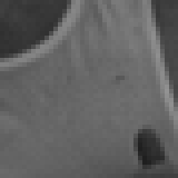
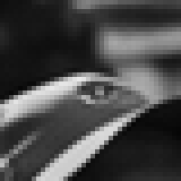
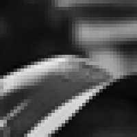
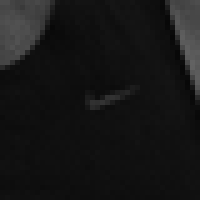
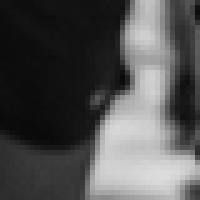
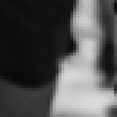
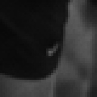
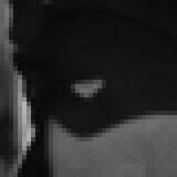
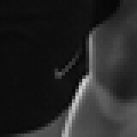
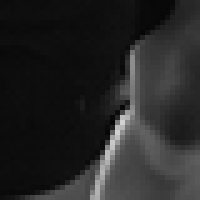
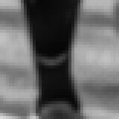
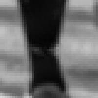
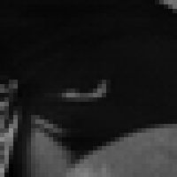
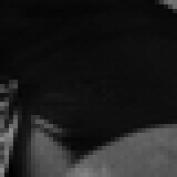
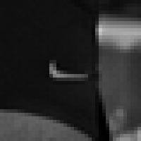
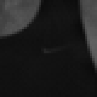
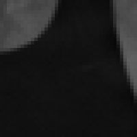
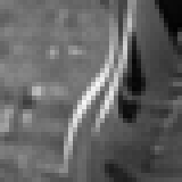
HYROX London · hyrox-sled-hall-1
Card focus: photo--mid (60%). Band (1536 × 1024 file): y 307–819. Retouched spots inside the band: 2. Round 2’s sports-bra mark wasn’t found at full size; the shorts and the shoe were retouched.
Retouched spots: before | after, 5×, 40 px window
HYROX Dallas · hyrox-wallball-hall-1
Card focus: photo--center (44%). Band (1536 × 1024 file): y 225–737. Retouched spots inside the band: 1. The judge’s shoe swoosh (round 2) sits below the band, so it isn’t retouched. Found in round 3: a three-stripe panel on the second athlete’s sports-bra band, inside the band, retouched.
Retouched spots: before | after, 5×, 40 px window
DEKA STRONG Chicago · deka-airbike-1
Card focus: new photo--upper (18%). Band (1536 × 1024 file): y 92–604. Retouched spots inside the band: 0. Nothing to retouch inside the band: the judge’s shoe and sock (round 2) sit below it. The light panels in the background are blurred blocks with no lettering.
Spartan Race Beast — Killington · ocr-wall-1
Card focus: new photo--upper (18%). Band (1536 × 1024 file): y 92–604. Retouched spots inside the band: 1. The man’s chest mark, inside the band, retouched.